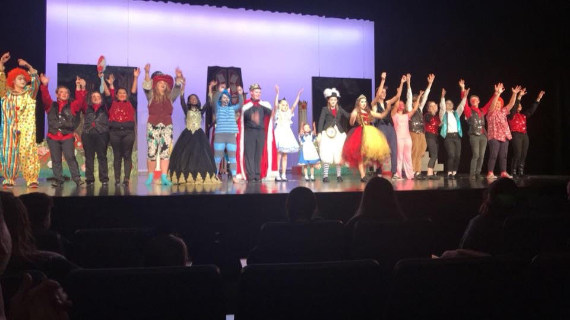

Alice in Wonderland
A play by Lewis Carroll
Showdates: March 2, 3, 4
Alice follows a white rabbit down a rabit hole. This play follows her adventures in Wonderland as she explores her new enviroment and tries to find a way out... right after she finds that pesky rabbit.